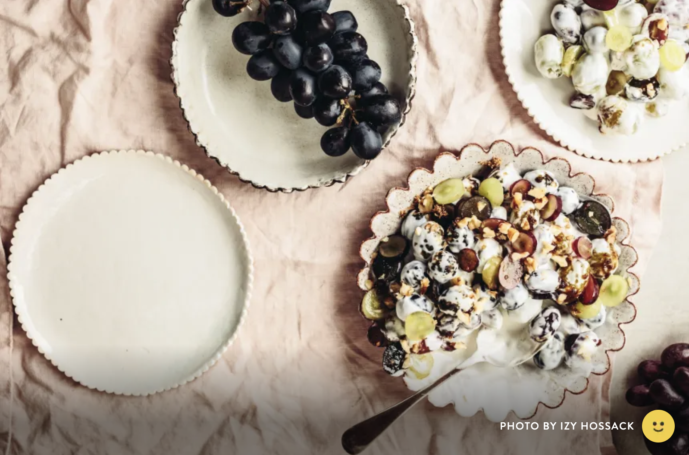

Grape Salad Recipe
Best grape salad recipe - Food.com. (2002, July 29).
https://www.food.com/recipe/best-grape-salad-35450

photo by: Izy Hossack
Best grape salad recipe - Food.com. (2002, July 29).
https://www.food.com/recipe/best-grape-salad-35450

photo by: Izy Hossack